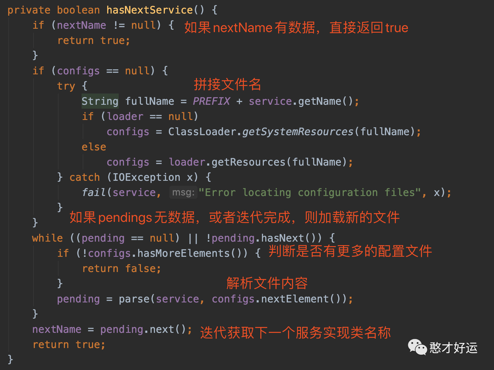
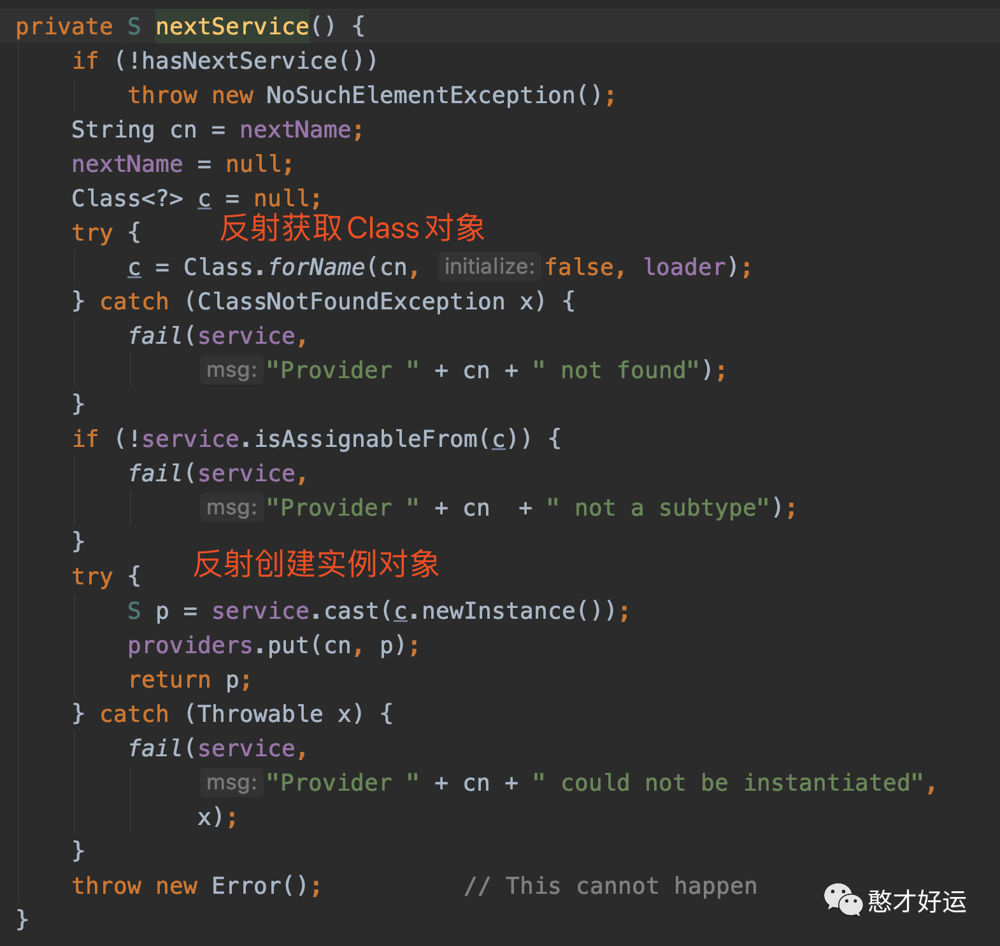

在动手实现一个简单的RPC框架一文中自定义的注册中心、网络通信与序列化反序列化等都是通过SPI插件和工厂类的方式实现的，只要按照 SPI 的规范，把协议的实现加入到运行时 CLASSPATH 中就可以了，就相当于告诉 Java 执行环境，在哪些目录下可以找到你所要执行的 Java 程序所需要的类或者包。我们将每个功能点抽象成一个接口，将这个接口作为插件的契约，然后把这个功能的接口与功能的实现分离并提供接口的默认实现。首先它的可扩展性很好，实现了开闭原则，用户可以非常方便地通过插件扩展实现自己的功能，而且不需要修改核心功能的本身；其次就是保持了核心包的精简，依赖外部包少。那么，什么是SPI呢？
SPI定义
SPI全称Service Provider Interface，是Java提供的一套用来被第三方实现或者扩展的API，它可以用来启用框架扩展和替换组件。Java SPI 实际上是“基于接口的编程＋策略模式＋配置文件”组合实现的动态加载机制。
系统设计的抽象，往往有很多不同的实现方案，在面向对象的程序里，一般是模块之间基于接口编程，模块之间不对实现类进行硬编码。一旦代码里涉及具体的实现类，就违反了可拔插的原则，如果需要替换一种实现，就需要修改代码。为了实现在模块装配的时候能不在程序里动态指明，这就需要一种服务发现机制。
Java SPI就是提供这样的一个机制：为某个接口寻找服务实现的机制。有点类似IOC的思想，就是将装配的控制权移到程序之外，在模块化设计中这个机制尤其重要，所以SPI的核心思想就是解耦。SPI机制适用于调用者根据实际使用需要，启用、扩展或者替换框架的实现策略
比较常见的例子：
-
数据库驱动加载接口实现类的加载：
JDBC加载不同类型数据库的驱动; -
日志门面接口实现类加载：
SLF4J加载不同提供商的日志实现类; -
Spring：
Spring中大量使用了SPI,比如：对servlet3.0规范对ServletContainerInitializer的实现、自动类型转换Type Conversion SPI(Converter SPI、Formatter SPI)等; -
Dubbo：
Dubbo中也大量使用SPI的方式实现框架的扩展, 不过它对Java提供的原生SPI做了封装，允许用户扩展实现Filter接口;
JDK SPI
使用示例
定义接口如下：
1 | public interface SayHelloService { |
定义两个实现类如下：
1 | public class ChineseSayHelloServiceImpl implements SayHelloService { |
接下来在 META-INF/services 文件夹下创建名称为接口的全限定类名的文件：
com.hancaihaoyun.SayHelloService，内容如下：
1 | com.hancaihaoyun.ChineseSayHelloServiceImpl |
最后JDK SPI使用 ServiceLoader 加载实现类，加载方式如下：
1 | public class Main { |
源码分析
加载类的全限定名
首先调用 ServiceLoader#load 会创建一个 ServiceLoader 对象，用于加载实现类：
在 ServiceLoader 的构造器中会创建一个迭代器 LazyIterator，顾名思义，是以懒加载的方式加载服务实现类。而 ServiceLoader 类本身也实现了 Iterator 接口，调用 hasNext() 和 next() 方法时，内部调用 LazyIterator 的对应接口。
接下来就看看 LazyIterator 的具体实现。
加载的逻辑主要分为四步：
1）如果 nextName 有数据，说明前面已经加载了实现类，直接返回 true；
2）如果 nextName 无数据，则拼接配置文件名称 fullName：PREFIX + service.getName()，此处为 “META-INF/services/com.wlm.spi.service.Animal”，由于是绝对路径，因此每个 jar 包都可能有这个文件。
3）根据 fullName 加载文件列表 configs，此时如果 pendings (接口实现类名称列表) 无数据，则判断是否有待解析的文件：
如果无待解析的文件，说明已经加载完了，直接返回 false；
如果有，则调用 parse 方法解析具体的文件，并将解析的结果保存到 pendings 中。
4）最后设置 nextName = pendings.next()。
实例化扩展实现类
其次通过解析配置文件内的所有实现类的全限定名称列表 names，接下来就是实例化的过程，最后实例化的实现在 LazyIterator#next 中：
其中 nextName 为前面调用 hasNext() 获取到的接口实现类名称。
nextService() 主要有以下几个步骤：
通过 Class.forName 反射获取 Class 对象 c；
判断 c 是否是 service 接口的子类；
反射创建 c 的实例对象，并强制转换成 service 类型后，添加到 providers 列表中。
如果某一步出错，则抛出 ServiceConfigurationError 异常。
实例化的过程比较简单，使用方通过循环迭代获取并实例化扩展实现类，最终可得到一个扩展对象的列表。
JDK SPI的缺点就是会一次性加载所有的实现类，然后从中选取我们需要的实现类，而不是我们配置需要哪个实现从而加载对应的实现。
Dubbo SPI
Dubbo 并未使用 Java 原生的 SPI 机制，而是对其进行了增强，使其能够更好的满足需求。在 Dubbo 中，SPI 是一个非常重要的模块。基于 SPI，我们可以很容易的对 Dubbo 进行拓展。如果大家想要学习 Dubbo 的源码，SPI 机制务必弄懂，官方文档中详细地分析了源码的设计思路，这里附上文档链接：
https://dubbo.apache.org/zh-cn/docs/source_code_guide/dubbo-spi.html
有关SPI机制是如何违背双亲委派机制、以及Dobbo SPI对JDK SPI所做的IOC和AOP增强方面在重点阅读推荐中附上链接，本文就不作赘述。
最后总结一下两者的异同点，JDK SPI 和 Dubbo SPI 都通过将扩展实现类的全限定名称配置在文件中，并且在运行时动态加载，但用法和实现方式却大有不同：
Java SPI Dubbo SPI
配置文件内容 只需配置实现类的全限定名称 需配置别名和实现类全限定名称的映射关系
加载实现类方式 通过迭代器调用 hasNext 时，再去判断是否解析文件 一次性加载所有的实现类
实例化 反射调用无参构造器实例化 在反射实例化的基础上，还支持以 IOC 的方式注入依赖
获取实现类方式 根据迭代器遍历所有的扩展实现类 可根据别名获取；可获取默认的扩展实现类；可自适应获取
JDK SPI 维护的是扩展实现类 List 列表，而 Dubbo SPI 维护的是扩展实现类别名和类之间的 Map 映射关系，如果系统中有多个扩展实现类，且需要灵活的指定不同的实现类，那么 Dubbo SPI 的方式更加适合。
重点阅读推荐
关注【憨才好运】微信公众号，了解更多精彩内容⬇️⬇️⬇️